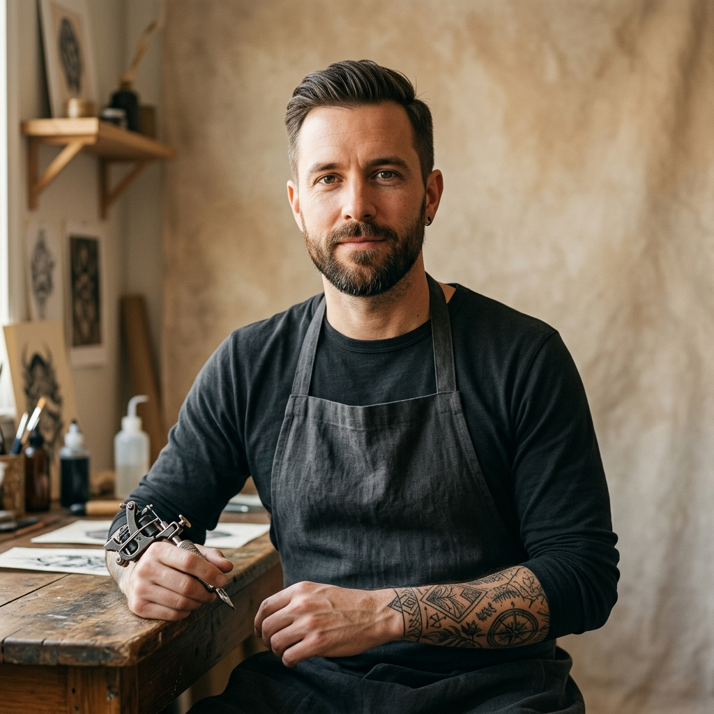
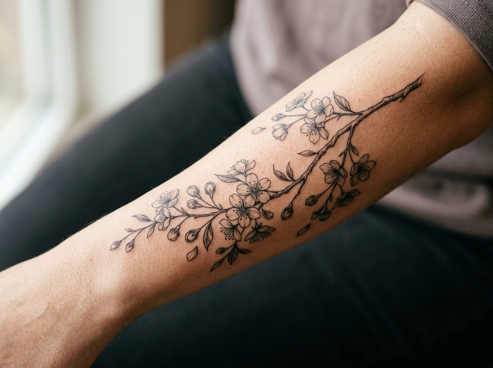

Etapa incerta
Cliente e estúdio precisam perguntar ou procurar para saber onde o trabalho está.
Projeto de produto · estúdio de tatuagem
Uma experiência para a cliente Bruna e para o tatuador Vitor — com etapas claras, histórico e regras que protegem o processo.
01 · O problema
Cada tatuagem é um compromisso que dura mais de um dia. A conversa sozinha não é um bom lugar para controlar o que já aconteceu.
Cliente e estúdio precisam perguntar ou procurar para saber onde o trabalho está.
Aprovação, datas e observações ficam espalhadas entre conversas e memória.
É difícil perceber rapidamente quais tatuagens esperam o próximo passo.
02 · Persona cliente
27 anos, designer, vai fazer sua primeira tatuagem grande. Usa o sistema principalmente pelo celular.
03 · Persona tatuador
Tatuador e dono do estúdio, organiza a agenda entre uma sessão e outra. Usa o sistema principalmente no computador.

04 · Jornada e telas
Cliente
Formulário simples; cartões mostram etapa e permitem abrir a linha do tempo.
Estúdio
Filtro por etapa; ficha reúne dados, passos e registro da próxima ação.
Mobile-first para as telas da cliente, visão ampla para a gestão — todas continuam responsivas.
05 · Identidade visual
Playfair Display nos títulos; fonte sem serifa do sistema para leitura e controles.
Decisão de marca
O contraste entre traços da fonte conversa com o nome. Uma única cor de acento mantém a interface calma e reconhecível.
06 · Hierarquia e acessibilidade
Cada etiqueta traz o nome da etapa; o tema escuro também respeita os contrastes.
Contraste de texto branco sobre o acento · acima do mínimo WCAG AA para texto normal (4,5:1).
07 · Regra de negócio
Recusa: sessão antes da aprovação do desenho.
Recusa: retoque antes de ao menos uma sessão.
Só um passo aceito atualiza a etapa. Pedido novo sempre começa como pedida.
08 · Como o produto sustenta o fluxo
Bruna
A lista de tatuagens usa o identificador da cliente autenticada para consultar o que pertence a ela.
Vitor
Encontra tatuagens por etapa, abre a ficha e registra passos com resposta visível.
09 · Resultado e escopo
O foco é acompanhar bem a tatuagem — sem aumentar o escopo com funções que não resolvem essa dor.
